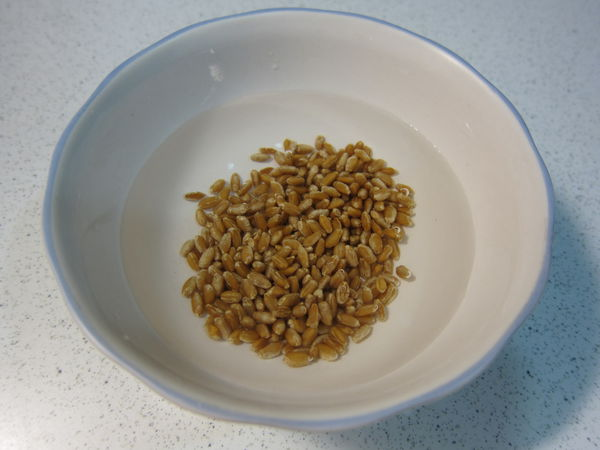
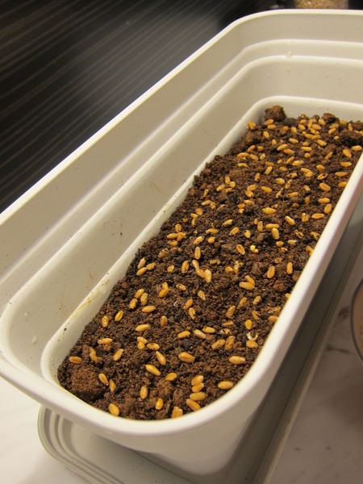
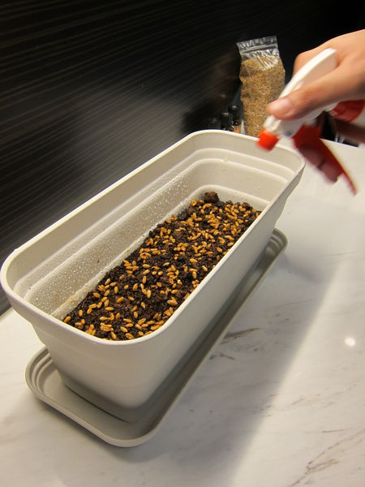
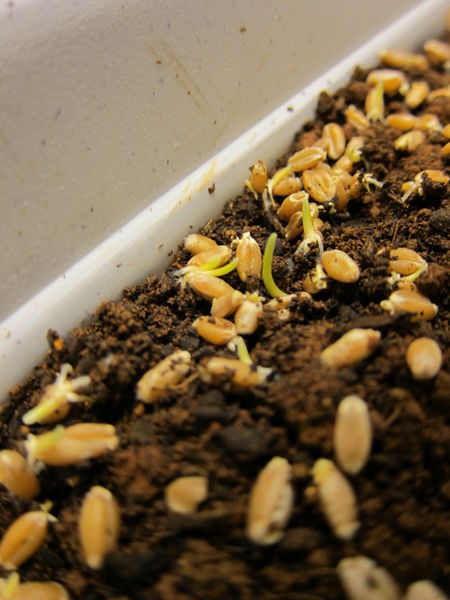
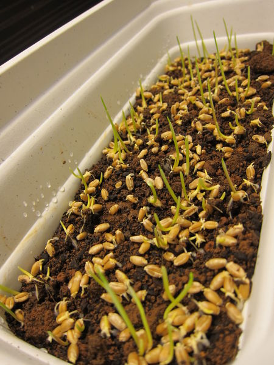
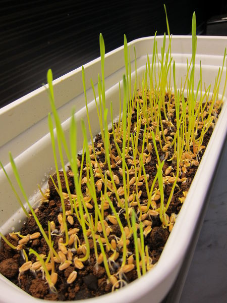
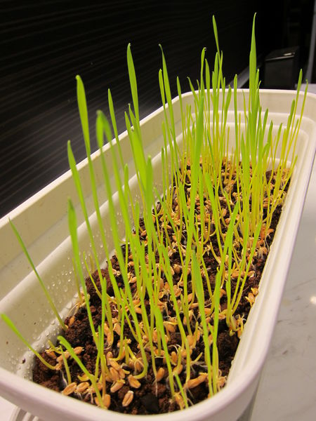
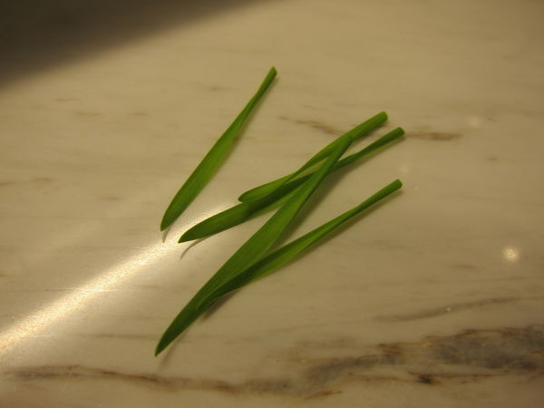

貓草是什麼呢
貓草是專門栽培供貓食用後可以幫助吐毛球的植物統稱，
貓喜歡通過舔的方法自我清潔，因此胃中會結毛球。
這類植物貓食用無毒無害，富含纖維，
可以刺激貓的腸胃蠕動，幫助貓吐出在胃中結成團的毛球。
小麥、燕麥及綠豆等植物都可以作為貓草供貓食用。
市場上也有專門的「吐毛球膏」可以替代貓草。
貓草真面目
小麥草 / 貓草 （Wheatgrass / Catgrass）是鵝觀草屬 （Agropyron），
特別是雞冠鵝觀草 （Agropyron cristatum，小麥的同類）的幼芽。
其嫩葉可以搾汁或曬乾磨粉。未經加工的植株含大量纖維素，難以為人消化。
但其也含有葉綠素、胺基酸、維生素、礦物質和酵素。
貓草長怎樣
要怎麼種
| 先給它泡個水4-8小時 | 然後把它鋪在土上面 |
|  |  |
| 早晚各給他喝一次水 | 之後他就會冒出小綠芽 |
|  |  |
| 綠芽變小草一直往上長 | 越長越長 |
|  |  |
| 長到超高後就成功了 | 最後收割給喵星人吃囉 |
|  |  |
看喵星人吃迷藥
資料來源